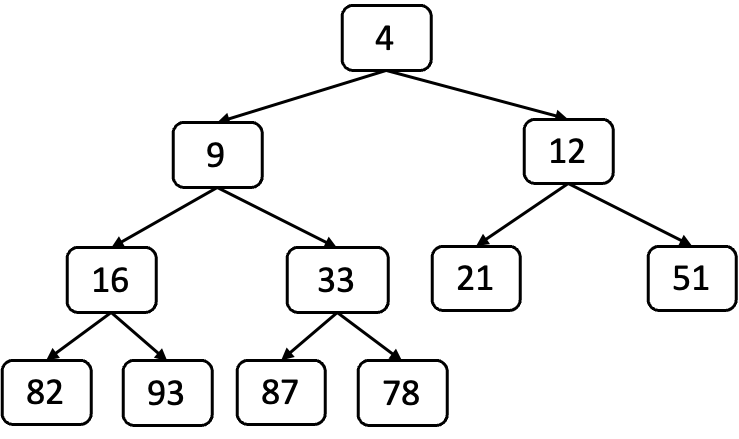
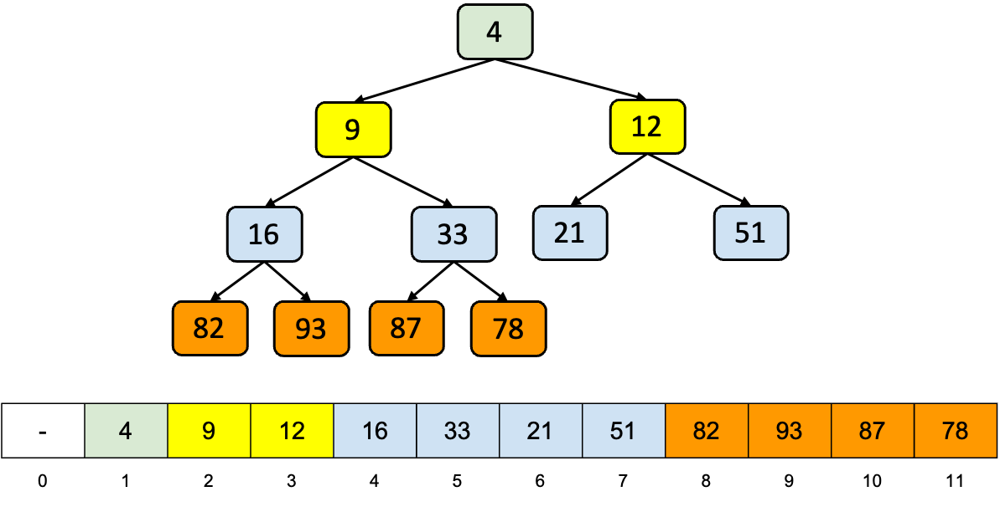
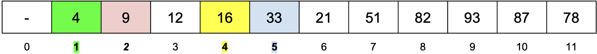
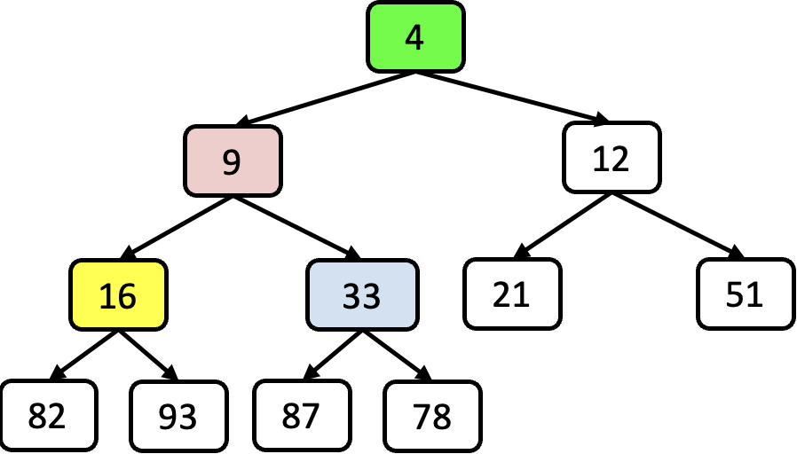

<!DOCTYPE html>
<html lang="en">
  <head>
    <meta charset="utf-8" />
    <meta name="viewport" content="width=device-width, initial-scale=1.0, maximum-scale=1.0, user-scalable=no" />

    <title></title>
    <link rel="stylesheet" href="dist/reveal.css" />
    <link rel="stylesheet" href="dist/theme/iph.css" id="theme" />
    <link rel="stylesheet" href="plugin/highlight/spyder.css" />
	<link rel="stylesheet" href="css/layout.css" />
	<link rel="stylesheet" href="plugin/customcontrols/style.css">


    <script defer src="dist/fontawesome/all.min.js"></script>

	<script type="text/javascript">
		var forgetPop = true;
		function onPopState(event) {
			if(forgetPop){
				forgetPop = false;
			} else {
				parent.postMessage(event.target.location.href, "app://obsidian.md");
			}
        }
		window.onpopstate = onPopState;
		window.onmessage = event => {
			if(event.data == "reload"){
				window.document.location.reload();
			}
			forgetPop = true;
		}

		function fitElements(){
			const itemsToFit = document.getElementsByClassName('fitText');
			for (const item in itemsToFit) {
				if (Object.hasOwnProperty.call(itemsToFit, item)) {
					var element = itemsToFit[item];
					fitElement(element,1, 1000);
					element.classList.remove('fitText');
				}
			}
		}

		function fitElement(element, start, end){

			let size = (end + start) / 2;
			element.style.fontSize = `${size}px`;

			if(Math.abs(start - end) < 1){
				while(element.scrollHeight > element.offsetHeight){
					size--;
					element.style.fontSize = `${size}px`;
				}
				return;
			}

			if(element.scrollHeight > element.offsetHeight){
				fitElement(element, start, size);
			} else {
				fitElement(element, size, end);
			}		
		}


		document.onreadystatechange = () => {
			fitElements();
			if (document.readyState === 'complete') {
				if (window.location.href.indexOf("?export") != -1){
					parent.postMessage(event.target.location.href, "app://obsidian.md");
				}
				if (window.location.href.indexOf("print-pdf") != -1){
					let stateCheck = setInterval(() => {
						clearInterval(stateCheck);
						window.print();
					}, 250);
				}
			}
	};


        </script>
  </head>
  <body>
    <div class="reveal">
      <div class="slides"><section  data-markdown><script type="text/template"><!-- .slide: class="has-light-background drop" data-background-color="#f8f8f8" -->
<div class="" style="position: absolute; left: 0px; top: 0px; height: 700px; width: 960px; min-height: 700px; display: flex; flex-direction: column; align-items: center; justify-content: center" absolute="true">

### Estructura de Datos y Algoritmos - EDA

####  *Colas de prioridad y HeapSort*

[Eduardo Rosales](mailto:ee.rosales24@uniandes.edu.co)

Departamento de Ingeniería de Sistemas y Computación

Universidad de los Andes
</div></script></section><section  data-markdown><script type="text/template"><!-- .slide: class="has-light-background drop" data-background-color="#f8f8f8" -->
<div class="" style="position: absolute; left: 0px; top: 0px; height: 700px; width: 960px; min-height: 700px; display: flex; flex-direction: column; align-items: center; justify-content: center" absolute="true">

### Motivación

- Paralelo con la vida real:

	- En una sala de emergencias los pacientes son atendidos
		- Por la gravedad de su condición
			- No por el orden de llegada
	
	- Limitación de las colas FIFO:
		- Las colas FIFO **no son eficientes** en este escenario
			- Ej: El primer paciente en llegar
				- No es necesariamente el más crítico
	
	- Solución - **Colas de prioridad**
		- Permiten procesar los elementos no por su orden de llegada
			- Sino por su prioridad
</div></script></section><section  data-markdown><script type="text/template"><!-- .slide: class="has-light-background drop" data-background-color="#f8f8f8" -->
<div class="" style="position: absolute; left: 0px; top: 0px; height: 700px; width: 960px; min-height: 700px; display: flex; flex-direction: column; align-items: center; justify-content: center" absolute="true">

### Colas de prioridad

- Estructura de datos que organiza elementos según un **criterio de prioridad**
	- No simplemente por orden de llegada

	<br>

- **Requisitos básicos:**
- Orden total
	- Todos los elementos pueden compararse entre sí 
		- Para determinar cuál tiene mayor prioridad
- La cola puede ser:
	- Ascendente (**MinPQ**)
	- Descendente (**MaxPQ**)
</div></script></section><section  data-markdown><script type="text/template"><!-- .slide: class="has-light-background drop" data-background-color="#f8f8f8" -->
<div class="" style="position: absolute; left: 0px; top: 0px; height: 700px; width: 960px; min-height: 700px; display: flex; flex-direction: column; align-items: center; justify-content: center" absolute="true">

### Tipos de colas de prioridad


- **Cola MinPQ**
	- Los elementos con valores **más pequeños** tienen la **mayor prioridad**
	- Ej: En una escala de 1-5
		- El 1 tiene la mayor prioridad

<br>

- **Cola MaxPQ**
	- Los elementos con valores **más grandes** son los **más prioritarios**
	- Ej: En una escala de 1-5
		- El 5 es el de mayor prioridad
</div></script></section><section  data-markdown><script type="text/template"><!-- .slide: class="has-light-background drop" data-background-color="#f8f8f8" -->
<div class="" style="position: absolute; left: 0px; top: 0px; height: 700px; width: 960px; min-height: 700px; display: flex; flex-direction: column; align-items: center; justify-content: center" absolute="true">

### Colas de prioridad - Inserción

- Añade un nuevo elemento a la cola
- Ubica el elemento según su prioridad para mantener el orden correcto
	- MinPQ: 
		- El elemento de mayor prioridad 
			- Es el elemento con el valor más pequeño
	- MaxPQ: 
		- El elemento de mayor prioridad 
			- Es el elemento con el valor más grande
- Tiempo de ejecución puede variar según la implementación
	- Comúnmente es **O(log n)**
</div></script></section><section  data-markdown><script type="text/template"><!-- .slide: class="has-light-background drop" data-background-color="#f8f8f8" -->
<div class="" style="position: absolute; left: 0px; top: 0px; height: 700px; width: 960px; min-height: 700px; display: flex; flex-direction: column; align-items: center; justify-content: center" absolute="true">

### Colas de prioridad - Extracción

- Remueve y retorna el elemento con la mayor prioridad 
	- Mínima en MinPQ
	- Máxima en MaxPQ
- Asegura que la estructura se reorganice 
	- Para mantener el orden de prioridades
- Generalmente implica un tiempo de ejecución de **O(log n)** 
	- Debido al reajuste necesario tras la extracción
</div></script></section><section  data-markdown><script type="text/template"><!-- .slide: class="has-light-background drop" data-background-color="#f8f8f8" -->
<div class="" style="position: absolute; left: 0px; top: 0px; height: 700px; width: 960px; min-height: 700px; display: flex; flex-direction: column; align-items: center; justify-content: center" absolute="true">

### Comprendamos una implementación de las colas de prioridad
</div></script></section><section  data-markdown><script type="text/template"><!-- .slide: class="has-light-background drop" data-background-color="#f8f8f8" -->
<div class="" style="position: absolute; left: 0px; top: 0px; height: 700px; width: 960px; min-height: 700px; display: flex; flex-direction: column; align-items: center; justify-content: center" absolute="true">

### Binary heap

- Implementación de una cola de prioridad
- El binary heap es un árbol 
	- Que mantiene el **orden de las llaves según la prioridad**
- **Propiedad heap:**
	- MinHeap: 
		- Cada nodo es menor o igual que sus hijos
	- MaxHeap: 
		- Cada nodo es mayor o igual que sus hijos
- Eficiencia en operaciones: 
	- Insertar y extraer elementos 
		- Tienen una complejidad temporal de **O(log n)**
		- Esto se debe a la forma en un árbol binario completo
</div></script></section><section  data-markdown><script type="text/template"><!-- .slide: class="has-light-background drop" data-background-color="#f8f8f8" -->
<div class="" style="position: absolute; left: 0px; top: 0px; height: 700px; width: 960px; min-height: 700px; display: flex; flex-direction: column; align-items: center; justify-content: center" absolute="true">

### Árbol binario completo (repaso)

- Árbol binario en que todos los niveles
	- Excepto opcionalmente el último
		- Están completamente llenos
			- Y todos los nodos están 
				- Tan a la izquierda como sea posible


</div></script></section><section  data-markdown><script type="text/template"><!-- .slide: class="has-light-background drop" data-background-color="#f8f8f8" -->
<div class="" style="position: absolute; left: 0px; top: 0px; height: 700px; width: 960px; min-height: 700px; display: flex; flex-direction: column; align-items: center; justify-content: center" absolute="true">

### MinHeap - Ejemplo




- La raíz del árbol es el elemento más pequeño (MinPQ)
- El árbol es completo
- Todo subárbol hijo izquierdo y derecho 
	- Cumple la propiedad heap
		- Cada nodo es menor o igual que sus hijos
</div></script></section><section  data-markdown><script type="text/template"><!-- .slide: class="has-light-background drop" data-background-color="#f8f8f8" -->
<div class="" style="position: absolute; left: 0px; top: 0px; height: 700px; width: 960px; min-height: 700px; display: flex; flex-direction: column; align-items: center; justify-content: center" absolute="true">

### Los binary heaps se pueden representar como arreglos
</div></script></section><section  data-markdown><script type="text/template"><!-- .slide: class="has-light-background drop" data-background-color="#f8f8f8" -->
<div class="" style="position: absolute; left: 0px; top: 0px; height: 700px; width: 960px; min-height: 700px; display: flex; flex-direction: column; align-items: center; justify-content: center" absolute="true">

### Binary heaps como arreglos (1/2)

- Los binary heaps se pueden representar eficientemente con arreglos
	- Ahorrando espacio de memoria al eliminar la necesidad de punteros
		- Mayor eficiencia espacial
- **Repaso:** 
	- Los arreglos permiten un acceso directo a los elementos
		- Lo que facilita las operaciones de inserción y eliminación
- La estructura en arreglo facilita mantener la propiedad heap
</div></script></section><section  data-markdown><script type="text/template"><!-- .slide: class="has-light-background drop" data-background-color="#f8f8f8" -->
<div class="" style="position: absolute; left: 0px; top: 0px; height: 700px; width: 960px; min-height: 700px; display: flex; flex-direction: column; align-items: center; justify-content: center" absolute="true">

### Binary heaps como arreglos (2/2)

- Construir un heap desde un arreglo desordenado 
	- Es de complejidad temporal **O(n)**
		- Aprovechando la estructura completa 
			- O casi completa si la posición 0 se deja vacía
</div></script></section><section  data-markdown><script type="text/template"><!-- .slide: class="has-light-background drop" data-background-color="#f8f8f8" -->
<div class="" style="position: absolute; left: 0px; top: 0px; height: 700px; width: 960px; min-height: 700px; display: flex; flex-direction: column; align-items: center; justify-content: center" absolute="true">

### MinHeap como arreglo - Ejemplo


</div></script></section><section  data-markdown><script type="text/template"><!-- .slide: class="has-light-background drop" data-background-color="#f8f8f8" -->
<div class="" style="position: absolute; left: 0px; top: 0px; height: 700px; width: 960px; min-height: 700px; display: flex; flex-direction: column; align-items: center; justify-content: center" absolute="true">

### Binary heaps como arreglos - Acceso (1/3)

- Indexación eficiente
- El `índice i` del arreglo 
	- Corresponde a un nodo del árbol
- La posición cero no se utiliza (en algunas implementaciones)
</div></script></section><section  data-markdown><script type="text/template"><!-- .slide: class="has-light-background drop" data-background-color="#f8f8f8" -->
<div class="" style="position: absolute; left: 0px; top: 0px; height: 700px; width: 960px; min-height: 700px; display: flex; flex-direction: column; align-items: center; justify-content: center" absolute="true">

### Binary heaps como arreglos - Acceso (2/3)

- **Acceso a los hijos**
	- Los hijos de un nodo en la posición `i` están en:

	- Hijo izquierdo: 
		- `2 * i`

	- Hijo derecho: 
		- `2 * i + 1`
</div></script></section><section  data-markdown><script type="text/template"><!-- .slide: class="has-light-background drop" data-background-color="#f8f8f8" -->
<div class="" style="position: absolute; left: 0px; top: 0px; height: 700px; width: 960px; min-height: 700px; display: flex; flex-direction: column; align-items: center; justify-content: center" absolute="true">

### Binary heaps como arreglos - Acceso (3/3)

- **Acceso al padre**
	- El padre de un nodo en `i` se localiza en **`⌊i/2⌋`**
		- Donde **`⌊⌋`** denota la función piso (floor)
			- Que redondea hacia abajo al entero más cercano
</div></script></section><section  data-markdown><script type="text/template"><!-- .slide: class="has-light-background drop" data-background-color="#f8f8f8" -->
<div class="" style="position: absolute; left: 0px; top: 0px; height: 700px; width: 960px; min-height: 700px; display: flex; flex-direction: column; align-items: center; justify-content: center" absolute="true">

### MinHeap como arreglo - Ejemplo de acceso a hijos (1/3)




- La posición cero no se utiliza en esta implementación
</div></script></section><section  data-markdown><script type="text/template"><!-- .slide: class="has-light-background drop" data-background-color="#f8f8f8" -->
<div class="" style="position: absolute; left: 0px; top: 0px; height: 700px; width: 960px; min-height: 700px; display: flex; flex-direction: column; align-items: center; justify-content: center" absolute="true">

### MinHeap como arreglo - Ejemplo de acceso a hijos (2/3)





- Ejemplo - Los hijos del **nodo 9** están en:

	- Hijo izquierdo: 
		- `2 * i = 2 * 2 = 4`

	- Hijo derecho: 
		- `2 * i + 1 = 2 * 2 + 1 = 5`
</div></script></section><section  data-markdown><script type="text/template"><!-- .slide: class="has-light-background drop" data-background-color="#f8f8f8" -->
<div class="" style="position: absolute; left: 0px; top: 0px; height: 700px; width: 960px; min-height: 700px; display: flex; flex-direction: column; align-items: center; justify-content: center" absolute="true">

### MinHeap como arreglo - Ejemplo de acceso a hijos (3/3)


- Ejemplo - el padre del **nodo 9** está en:
	- Padre de `i`: 
		- `⌊i/2⌋ = ⌊2/2⌋ = ⌊1⌋ = 1`
</div></script></section><section  data-markdown><script type="text/template"><!-- .slide: class="has-light-background drop" data-background-color="#f8f8f8" -->
<div class="" style="position: absolute; left: 0px; top: 0px; height: 700px; width: 960px; min-height: 700px; display: flex; flex-direction: column; align-items: center; justify-content: center" absolute="true">

### Comprendamos en detalle la operación de inserción
</div></script></section><section  data-markdown><script type="text/template"><!-- .slide: class="has-light-background drop" data-background-color="#f8f8f8" -->
<div class="" style="position: absolute; left: 0px; top: 0px; height: 700px; width: 960px; min-height: 700px; display: flex; flex-direction: column; align-items: center; justify-content: center" absolute="true">

### Ejemplo de inserción


- [Inserción en Binary Heaps](https://eerosales24.github.io/eda_2025_20/m3/insercion_binary_heaps.ppsx)

	<br>

\* Para mejor visibilidad, por favor abrir el archivo en PowerPoint
</div></script></section><section  data-markdown><script type="text/template"><!-- .slide: class="has-light-background drop" data-background-color="#f8f8f8" -->
<div class="" style="position: absolute; left: 0px; top: 0px; height: 700px; width: 960px; min-height: 700px; display: flex; flex-direction: column; align-items: center; justify-content: center" absolute="true">

### Comprendamos en detalle la operación de extracción
</div></script></section><section  data-markdown><script type="text/template"><!-- .slide: class="has-light-background drop" data-background-color="#f8f8f8" -->
<div class="" style="position: absolute; left: 0px; top: 0px; height: 700px; width: 960px; min-height: 700px; display: flex; flex-direction: column; align-items: center; justify-content: center" absolute="true">

### Ejemplo de extracción

- [Extracción en Binary Heaps](https://eerosales24.github.io/eda_2025_20/m3/extraccion_binary_heaps.ppsx)

	<br>

\* Para mejor visibilidad, por favor abrir el archivo en PowerPoint
</div></script></section><section  data-markdown><script type="text/template"><!-- .slide: class="has-light-background drop" data-background-color="#f8f8f8" -->
<div class="" style="position: absolute; left: 0px; top: 0px; height: 700px; width: 960px; min-height: 700px; display: flex; flex-direction: column; align-items: center; justify-content: center" absolute="true">

### Hay un método de ordenamientos basado en los binary heaps
</div></script></section><section  data-markdown><script type="text/template"><!-- .slide: class="has-light-background drop" data-background-color="#f8f8f8" -->
<div class="" style="position: absolute; left: 0px; top: 0px; height: 700px; width: 960px; min-height: 700px; display: flex; flex-direction: column; align-items: center; justify-content: center" absolute="true">

###  HeapSort

- Algoritmo de ordenamiento por comparación
    
- Usa una estructura llamada
	- **Heap binario máximo**
    
- Organiza los datos en forma de árbol completo
    
- Ordena extrayendo repetidamente el elemento mayor
    
- El resultado es un arreglo ordenado ascendentemente
    
- Ordena in-place
	- Sin estructuras auxiliares significativas
</div></script></section><section  data-markdown><script type="text/template"><!-- .slide: class="has-light-background drop" data-background-color="#f8f8f8" -->
<div class="" style="position: absolute; left: 0px; top: 0px; height: 700px; width: 960px; min-height: 700px; display: flex; flex-direction: column; align-items: center; justify-content: center" absolute="true">

### Comprendamos en detalle a HeapSort
</div></script></section><section  data-markdown><script type="text/template"><!-- .slide: class="has-light-background drop" data-background-color="#f8f8f8" -->
<div class="" style="position: absolute; left: 0px; top: 0px; height: 700px; width: 960px; min-height: 700px; display: flex; flex-direction: column; align-items: center; justify-content: center" absolute="true">

### Ejemplo de HeapSort

- [HeapSort](https://eerosales24.github.io/eda_2025_20/m3/heapsort.ppsx)


	<br>

\* Para mejor visibilidad, por favor abrir el archivo en PowerPoint
</div></script></section><section  data-markdown><script type="text/template"><!-- .slide: class="has-light-background drop" data-background-color="#f8f8f8" -->
<div class="" style="position: absolute; left: 0px; top: 0px; height: 700px; width: 960px; min-height: 700px; display: flex; flex-direction: column; align-items: center; justify-content: center" absolute="true">

### Comprendamos una implementación simplificada de HeapSort
</div></script></section><section  data-markdown><script type="text/template"><!-- .slide: class="has-light-background drop" data-background-color="#f8f8f8" -->
<div class="" style="position: absolute; left: 0px; top: 0px; height: 700px; width: 960px; min-height: 700px; display: flex; flex-direction: column; align-items: center; justify-content: center" absolute="true">

### HeapSort - Ejemplo de implementación  (1/7)

```python
def heap_sort(arr):
    n = len(arr)
    # Construir max heap
    for i in range(n // 2 - 1, -1, -1):
        heapify(arr, n, i)
    # Extraer elementos uno por uno
    for i in range(n - 1, 0, -1):
        arr[0], arr[i] = arr[i], arr[0]  # mover máximo al final
        heapify(arr, i, 0)

def heapify(arr, n, i):
    mayor = i
    izq = 2 * i + 1
    der = 2 * i + 2
    if izq < n and arr[izq] > arr[mayor]:
        mayor = izq
    if der < n and arr[der] > arr[mayor]:
        mayor = der
    if mayor != i:
        arr[i], arr[mayor] = arr[mayor], arr[i]
        heapify(arr, n, mayor)
```
</div></script></section><section  data-markdown><script type="text/template"><!-- .slide: class="has-light-background drop" data-background-color="#f8f8f8" -->
<div class="" style="position: absolute; left: 0px; top: 0px; height: 700px; width: 960px; min-height: 700px; display: flex; flex-direction: column; align-items: center; justify-content: center" absolute="true">

### HeapSort - Ejemplo de implementación (2/7)

- Función principal – `heap_sort`:

```python

def heap_sort(arr):     
    n = len(arr)
```

- Se obtiene el tamaño del arreglo `arr`
	- Es necesario para saber cuántos elementos se van a ordenar

```python
    for i in range(n // 2 - 1, -1, -1):
        heapify(arr, n, i)
```

- Se construye el **max heap** desde los nodos no hoja hacia la raíz
    
	- `n // 2 - 1` es el último nodo con hijos
    
- Llama a `heapify` para asegurar propiedad de heap en cada subárbol
</div></script></section><section  data-markdown><script type="text/template"><!-- .slide: class="has-light-background drop" data-background-color="#f8f8f8" -->
<div class="" style="position: absolute; left: 0px; top: 0px; height: 700px; width: 960px; min-height: 700px; display: flex; flex-direction: column; align-items: center; justify-content: center" absolute="true">

### HeapSort - Ejemplo de implementación (3/7)

- Extracción y ordenamiento:
```python
    for i in range(n - 1, 0, -1):
        arr[0], arr[i] = arr[i], arr[0]
        heapify(arr, i, 0)
```

- Se intercambia el **máximo (`arr[0]`)** con el último elemento
    
- El heap se reduce en tamaño (`i`)
    
- Se llama a `heapify` para restaurar el heap en la raíz
    
- Se repite hasta que el arreglo quede ordenado
</div></script></section><section  data-markdown><script type="text/template"><!-- .slide: class="has-light-background drop" data-background-color="#f8f8f8" -->
<div class="" style="position: absolute; left: 0px; top: 0px; height: 700px; width: 960px; min-height: 700px; display: flex; flex-direction: column; align-items: center; justify-content: center" absolute="true">

### HeapSort - Ejemplo de implementación (4/7)

- Función `heapify` – Reorganiza el subárbol:

```python
def heapify(arr, n, i):
    mayor = i
    izq = 2 * i + 1
    der = 2 * i + 2
```

- Calcula índices de los hijos izquierdo y derecho del nodo `i`
    
- Compara el valor actual con sus hijos para encontrar el mayor
</div></script></section><section  data-markdown><script type="text/template"><!-- .slide: class="has-light-background drop" data-background-color="#f8f8f8" -->
<div class="" style="position: absolute; left: 0px; top: 0px; height: 700px; width: 960px; min-height: 700px; display: flex; flex-direction: column; align-items: center; justify-content: center" absolute="true">

### HeapSort - Ejemplo de implementación (5/7)

```python
    if izq < n and arr[izq] > arr[mayor]:
        mayor = izq
    if der < n and arr[der] > arr[mayor]:
        mayor = der
```

- Verifica que el hijo esté dentro del límite y si es mayor
    
- Si alguno de los hijos es mayor, actualiza `mayor`
</div></script></section><section  data-markdown><script type="text/template"><!-- .slide: class="has-light-background drop" data-background-color="#f8f8f8" -->
<div class="" style="position: absolute; left: 0px; top: 0px; height: 700px; width: 960px; min-height: 700px; display: flex; flex-direction: column; align-items: center; justify-content: center" absolute="true">

### HeapSort - Ejemplo de implementación (6/7)

```python
    if mayor != i:
        arr[i], arr[mayor] = arr[mayor], arr[i]
        heapify(arr, n, mayor)

```

- Si `i` no era el mayor, se intercambia con el hijo mayor
    
- Se llama recursivamente para mantener la propiedad de heap
</div></script></section><section  data-markdown><script type="text/template"><!-- .slide: class="has-light-background drop" data-background-color="#f8f8f8" -->
<div class="" style="position: absolute; left: 0px; top: 0px; height: 700px; width: 960px; min-height: 700px; display: flex; flex-direction: column; align-items: center; justify-content: center" absolute="true">

### HeapSort - Ejemplo de implementación (7/7)

Entrada: `[4, 10, 3, 5, 1]`  
Resultado esperado del heap: `[10, 5, 3, 4, 1]`


```palintext
[1, 5, 3, 4, 10]  # extraído 10
[5, 4, 3, 1, 10]  # heapify
[1, 4, 3, 5, 10]  # extraído 5
[4, 1, 3, 5, 10]  # heapify
[1, 3, 4, 5, 10]  # extraído 4
...
Resultado final: [1, 3, 4, 5, 10]
```
</div></script></section><section  data-markdown><script type="text/template"><!-- .slide: class="has-light-background drop" data-background-color="#f8f8f8" -->
<div class="" style="position: absolute; left: 0px; top: 0px; height: 700px; width: 960px; min-height: 700px; display: flex; flex-direction: column; align-items: center; justify-content: center" absolute="true">

### **Complejidad temporal de HeapSort**

- **Mejor caso: O(n log n)**
    
    - Ocurre incluso si el arreglo ya está ordenado
        
    - Porque igual se debe construir el heap y ordenar
        
- **Caso promedio: O(n log n)**
    
    - Resulta del comportamiento regular del heap
        
- **Peor caso: O(n log n)**
    
    - Ocurre cuando el arreglo está en orden inverso
        
    - Se tiende a log n en cada extracción
</div></script></section><section  data-markdown><script type="text/template"><!-- .slide: class="has-light-background drop" data-background-color="#f8f8f8" -->
<div class="" style="position: absolute; left: 0px; top: 0px; height: 700px; width: 960px; min-height: 700px; display: flex; flex-direction: column; align-items: center; justify-content: center" absolute="true">

### **Complejidad espacial de HeapSort**

- **Complejidad espacial: O(1)**
    
    - Utiliza el mismo arreglo para ordenar
        
    - No requiere estructuras adicionales grandes
        
    - Solo usa una cantidad constante de espacio extra
</div></script></section><section  data-markdown><script type="text/template"><!-- .slide: class="has-light-background drop" data-background-color="#f8f8f8" -->
<div class="" style="position: absolute; left: 0px; top: 0px; height: 700px; width: 960px; min-height: 700px; display: flex; flex-direction: column; align-items: center; justify-content: center" absolute="true">

###  Colas de prioridad – API


- **TODO:**
	- Revisar la [documentación de colas de prioridad](https://isis1225devs.github.io/ISIS1225-Structure-Documentation/DataStructures.Priority_queue.html)
		- Implementaciones de  [colas de prioridad](https://isis1225devs.github.io/ISIS1225-Structure-Documentation/DataStructures.Priority_queue.html#implementaciones-de-colas-de-prioridad)
</div></script></section><section  data-markdown><script type="text/template"><!-- .slide: class="has-light-background drop" data-background-color="#f8f8f8" -->
<div class="" style="position: absolute; left: 0px; top: 0px; height: 700px; width: 960px; min-height: 700px; display: flex; flex-direction: column; align-items: center; justify-content: center" absolute="true">

### Módulo 3: Algunas simulaciones útiles para repasar


- **BSTs:**
	- [https://www.cs.usfca.edu/~galles/visualization/BST.html](https://www.cs.usfca.edu/~galles/visualization/BST.html)  


	
- **RBTs** inclinados a la izquierda:
	- [https://tjkendev.github.io/bst-visualization/red-black-tree/left-leaning.html](https://tjkendev.github.io/bst-visualization/red-black-tree/left-leaning.html)

	- Nota: abrir en un navegador con traducción
		- Porque la página original está en japonés

- **minHeaps:**
	- [https://www.cs.usfca.edu/~galles/visualization/Heap.html](https://www.cs.usfca.edu/~galles/visualization/Heap.html)


-  **maxHeaps:**
	- [https://max-heap-visualizer.netlify.app/](https://max-heap-visualizer.netlify.app/)
</div></script></section><section  data-markdown><script type="text/template"><!-- .slide: class="has-light-background drop" data-background-color="#f8f8f8" -->
<div class="" style="position: absolute; left: 0px; top: 0px; height: 700px; width: 960px; min-height: 700px; display: flex; flex-direction: column; align-items: center; justify-content: center" absolute="true">

<i class="fas fa-question-circle fa-2x fa-spin fa-4x"></i>


<br>
<br>


[<i class="fas fa-home  fa-3x"></i>](https://eerosales24.github.io/eda_2025_20/#)
</div></script></section></div>
    </div>

    <script src="dist/reveal.js"></script>

    <script src="plugin/markdown/markdown.js"></script>
    <script src="plugin/highlight/highlight.js"></script>
    <script src="plugin/zoom/zoom.js"></script>
    <script src="plugin/notes/notes.js"></script>
    <script src="plugin/math/math.js"></script>
	<script src="plugin/mermaid/mermaid.js"></script>
	<script src="plugin/chart/chart.min.js"></script>
	<script src="plugin/chart/plugin.js"></script>
	<script src="plugin/customcontrols/plugin.js"></script>

    <script>
      function extend() {
        var target = {};
        for (var i = 0; i < arguments.length; i++) {
          var source = arguments[i];
          for (var key in source) {
            if (source.hasOwnProperty(key)) {
              target[key] = source[key];
            }
          }
        }
        return target;
      }

	  function isLight(color) {
		let hex = color.replace('#', '');

		// convert #fff => #ffffff
		if(hex.length == 3){
			hex = `${hex[0]}${hex[0]}${hex[1]}${hex[1]}${hex[2]}${hex[2]}`;
		}

		const c_r = parseInt(hex.substr(0, 2), 16);
		const c_g = parseInt(hex.substr(2, 2), 16);
		const c_b = parseInt(hex.substr(4, 2), 16);
		const brightness = ((c_r * 299) + (c_g * 587) + (c_b * 114)) / 1000;
		return brightness > 155;
	}

	var bgColor = getComputedStyle(document.documentElement).getPropertyValue('--r-background-color').trim();
	var isLight = isLight(bgColor);

	if(isLight){
		document.body.classList.add('has-light-background');
	} else {
		document.body.classList.add('has-dark-background');
	}

      // default options to init reveal.js
      var defaultOptions = {
        controls: true,
        progress: true,
        history: true,
        center: true,
        transition: 'default', // none/fade/slide/convex/concave/zoom
        plugins: [
          RevealMarkdown,
          RevealHighlight,
          RevealZoom,
          RevealNotes,
          RevealMath.MathJax3,
		  RevealMermaid,
		  RevealChart,
		  RevealCustomControls,
        ],


    	allottedTime: 120 * 1000,

		mathjax3: {
			mathjax: 'plugin/math/mathjax/tex-mml-chtml.js',
		},
		markdown: {
		  gfm: true,
		  mangle: true,
		  pedantic: false,
		  smartLists: false,
		  smartypants: false,
		},

		mermaid: {
			theme: isLight ? 'default' : 'dark',
		},

		customcontrols: {
			controls: [
			]
		},
      };

      // options from URL query string
      var queryOptions = Reveal().getQueryHash() || {};

      var options = extend(defaultOptions, {"width":960,"height":700,"margin":"0.025","minScale":"0.1","maxScale":"2.0","controls":"true","controlsLayout":"bottom-right","progress":"true","slideNumber":"true","center":"false","transition":"slide","transitionSpeed":"default"}, queryOptions);
    </script>

    <script>
      Reveal.initialize(options);
    </script>
  </body>

  <!-- created with Advanced Slides -->
</html>
